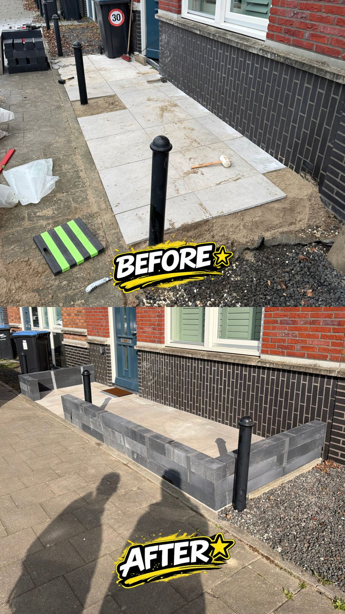

ONZE PROJECTEN
Bekijk de transformaties die wij hebben gerealiseerd voor tevreden klanten.

Tuinaanleg
ACHTERTUIN RENOVATIE
Complete transformatie van een verwaarloosde tuin naar een moderne loungetuin.

Onderhoud
GAZON & BORDERS
Van dorre vlakte naar een strak, diepgroen gazon met nette grindborders.

Bestrating
OPRIT BESTRATING
Verzakte oprit volledig hersteld met strak gelegde moderne klinkers.

Bestrating
TERRAS PROJECT
Nieuw terras aangelegd met sierbestrating en drainage.

Onderhoud
HEGGEN SNOEIEN
Professioneel snoeiwerk voor een strakke uitstraling.

Bestrating
KERAMISCHE TEGELS
Luxe keramische tegels gelegd voor een moderne uitstraling.